홈 › 시공사례
REAL PROJECT ARCHIVE
현장의 조건을 읽고,
매장에 맞는 답을 만듭니다.
기획 자료와 실제 현장 사진을 통해 공간이 어떻게 달라지는지 보여드립니다. 과일가게의 운영 효율과 의류매장의 진열 경험, 서로 다른 두 업종에 맞춘 설계 과정입니다.
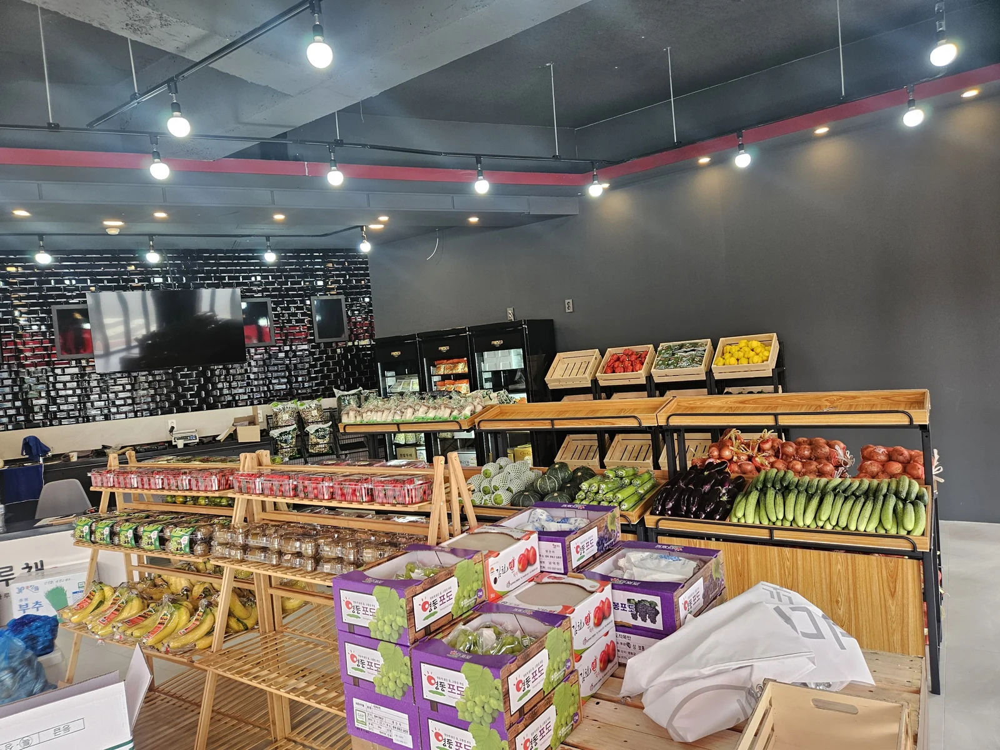
AFTER블랙 프레임과 원목 선반으로 상품의 색을 선명하게 드러낸 완성 공간
FURNITURE SELECTION
먼저, 운영에 필요한
매장 가구를 정리했습니다.
벽면용 2·3단 진열대부터 중앙 평판 매대까지 상품량과 진열 방식에 맞는 집기를 먼저 선정한 뒤 배치안을 검토했습니다.
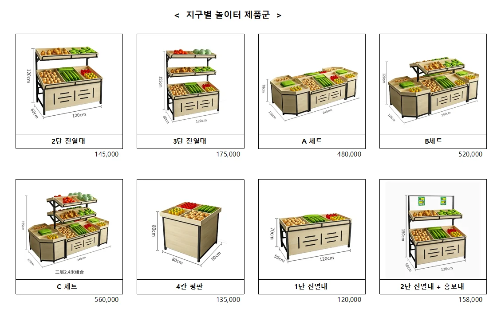
벽면 진열, 중앙 진열, 홍보 기능을 기준으로 검토한 매장 가구 구성
SPACE PLANNING
2개의 배치안을 비교하고,
운영에 맞는 안을 선택했습니다.
기존 카운터와 냉장고 위치를 유지하면서 벽면 진열대, 중앙 평판 매대, 오픈형 수납 카운터의 조합을 비교했습니다. 회유 동선과 수납 효율이 더 좋은 배치안 1을 최종안으로 선택했습니다.
- 입구에서 내부까지 시야가 열리는 낮은 중앙 매대
- 고객 이동을 위한 최소 550mm 통로 확보
- 하부 수납과 재고 진열을 함께 해결하는 평판 매대
배치안 1 · 최종 선택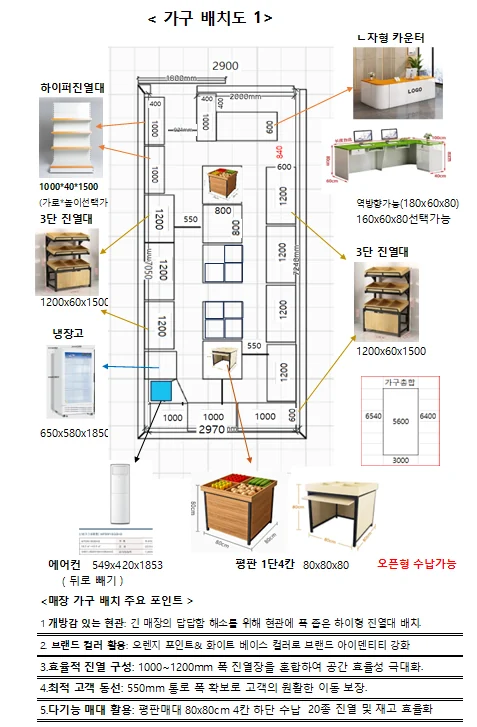
일자형 동선과 중앙 매대 간격을 확보한 최종안배치안 2 · 비교안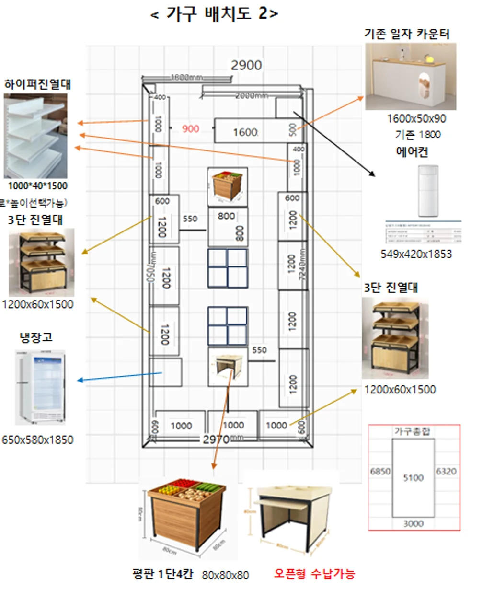
기존 일자 카운터를 유지한 대안 배치
01벽면 수직 진열
3단 진열대를 벽면에 연속 배치해 한정된 면적의 진열량을 높였습니다.
02550mm 이동폭
중앙 매대 사이에 최소 이동폭을 확보해 고객과 작업자의 동선을 분리했습니다.
03가변형 모듈
단수와 각도 조절이 가능한 집기로 계절별 상품 변화에 대응합니다.
BEFORE
과일가게 특성상 상품의 종류가 많고,
시선과 동선이 복잡한 문제를 해결해야 했습니다.
냉장고, 기존 선반, 중앙 상품 박스가 서로 다른 높이로 놓여 매장이 좁아 보이고 상품군의 구분도 어려웠습니다.
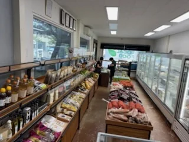
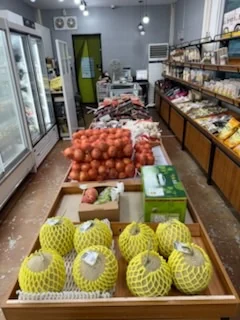
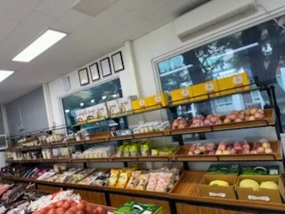
현장 기록 시각화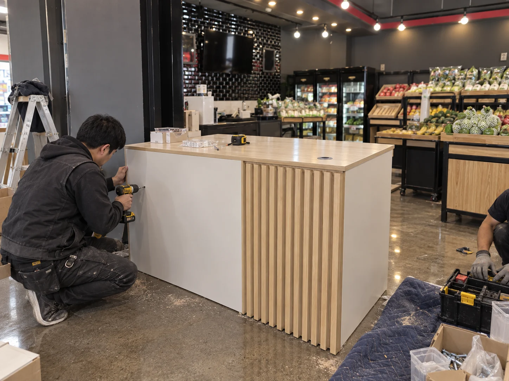
맞춤 제작 기존 공간 치수에 맞춘 수납형 카운터를 현장에서 마감합니다.
현장 기록 시각화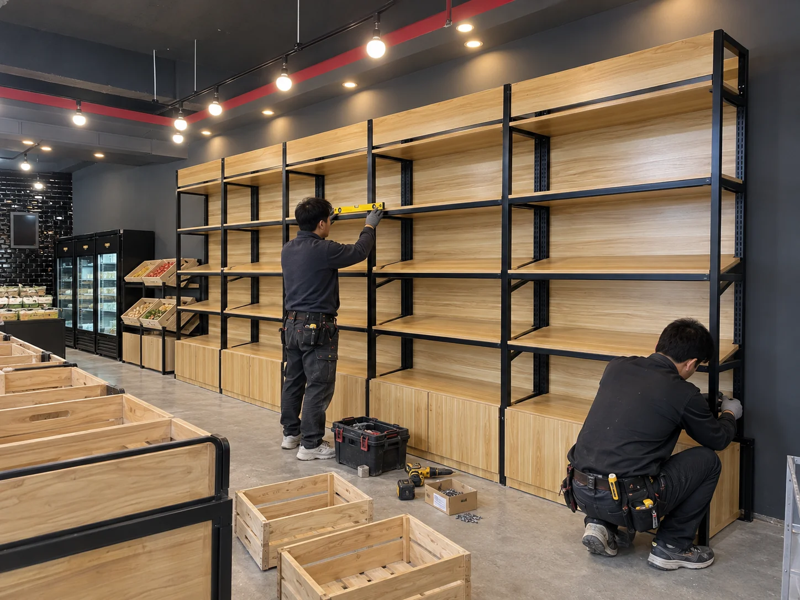
현장 설치 선반의 수평과 프레임 체결 상태를 확인하며 모듈을 설치합니다.
SPACE VISUALIZATION
배치완성 가상화를 통해서
보이지 않는 동선과 집기구조까지
실제 현장 사진과 배치 자료를 바탕으로 고객 시점의 전경과 진열 시스템을 가상화 이미지로 재구성을 먼저 실시했습니다.
상담 단계에서 상품이 놓였을 때의 밀도와 이동 흐름을 이해하는 데 도움을 줍니다.
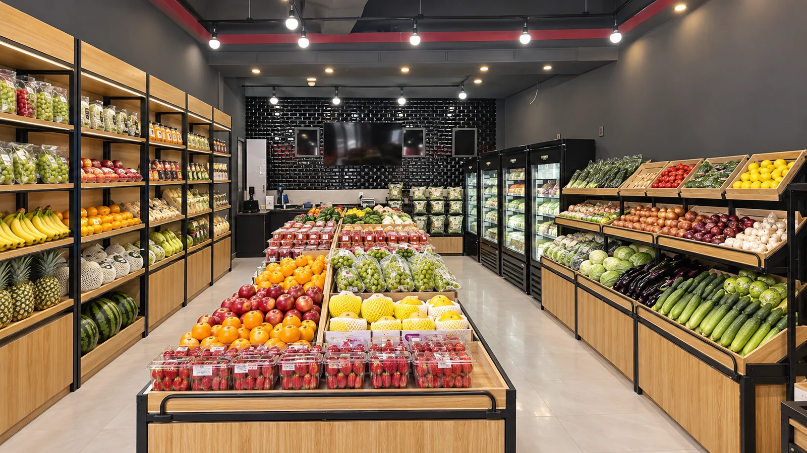
입구에서 매장 안쪽까지 시야를 열고 벽면 진열량을 확보한 구성
집기 구조 시각화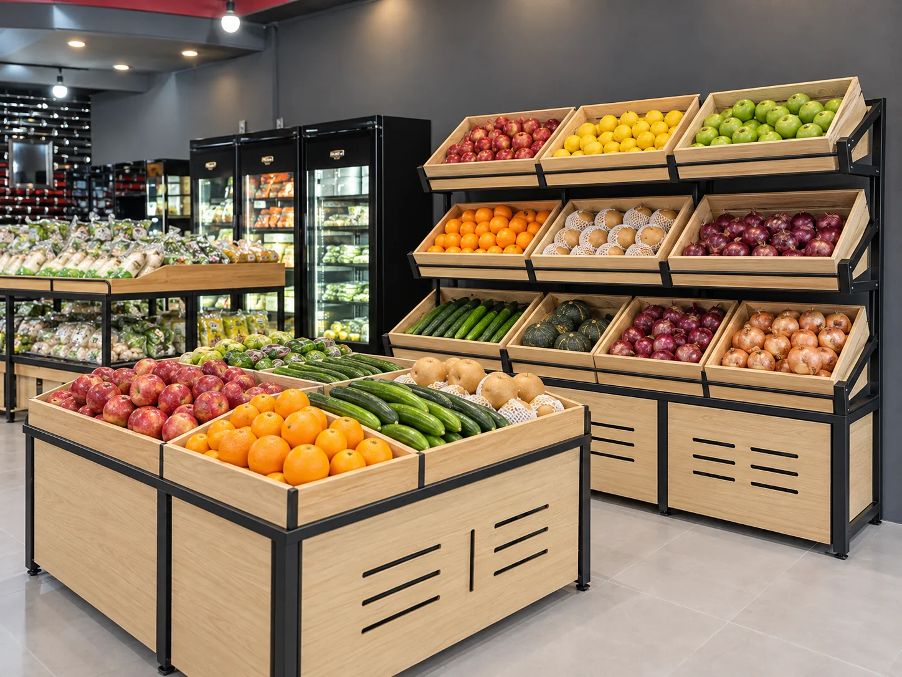
원목 선반·블랙 프레임·하부 수납이 결합된 모듈형 진열 시스템
PROJECT 02 · SPACE PROPOSAL
의류와 소품이 함께 보이는
유연한 리테일 시스템
행거, 벽면 진열, 중앙 테이블을 하나의 모듈 언어로 정리했습니다. 상품 구성과 시즌 변화에 따라 재배치할 수 있는 밝고 유연한 매장 제안입니다.
설치사례 기반 고해상도 재구성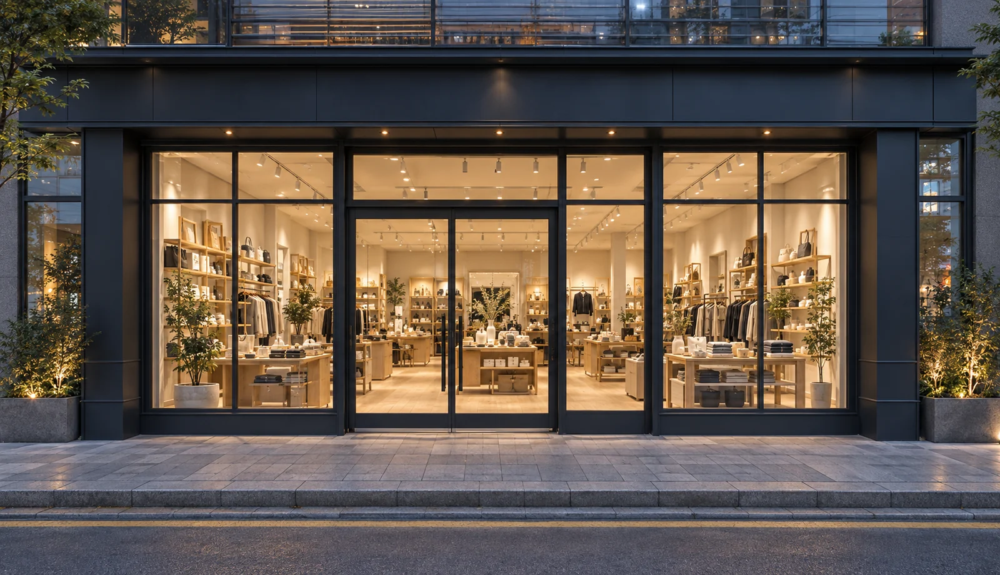
STORE VIEW외부에서도 집기 구성과 상품의 흐름이 읽히는 개방적인 매장 전면
BEFORE → AFTER
비어 있던 매장에
진열의 질서를 만듭니다.
동일한 공간 구조와 시점을 기준으로 공실 상태와 집기 설치 이후를 비교했습니다. 벽면은 수직 진열로 확장하고 중앙은 낮게 열어 회유 동선을 확보합니다.
BEFORE · 재구성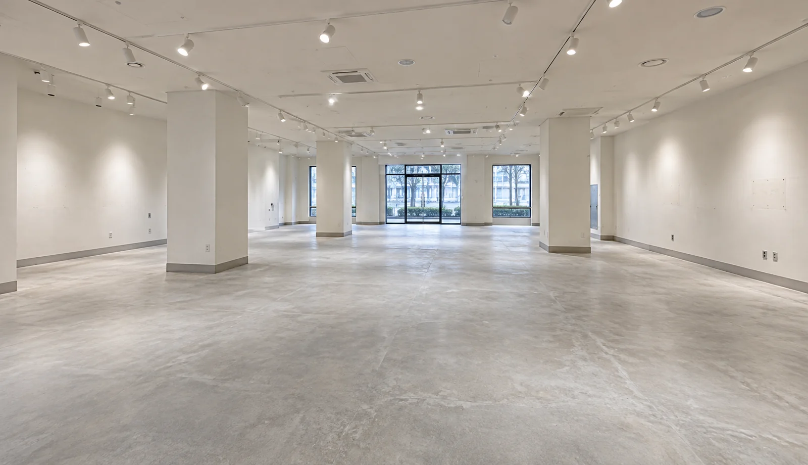
상품과 고객 동선을 계획하기 전의 빈 매장AFTER · 재구성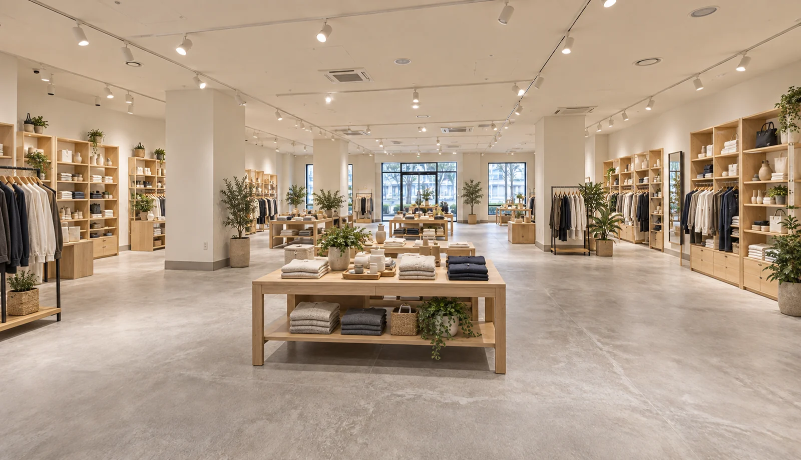
벽면 시스템과 중앙 매대를 설치해 상품 흐름을 완성한 공간
01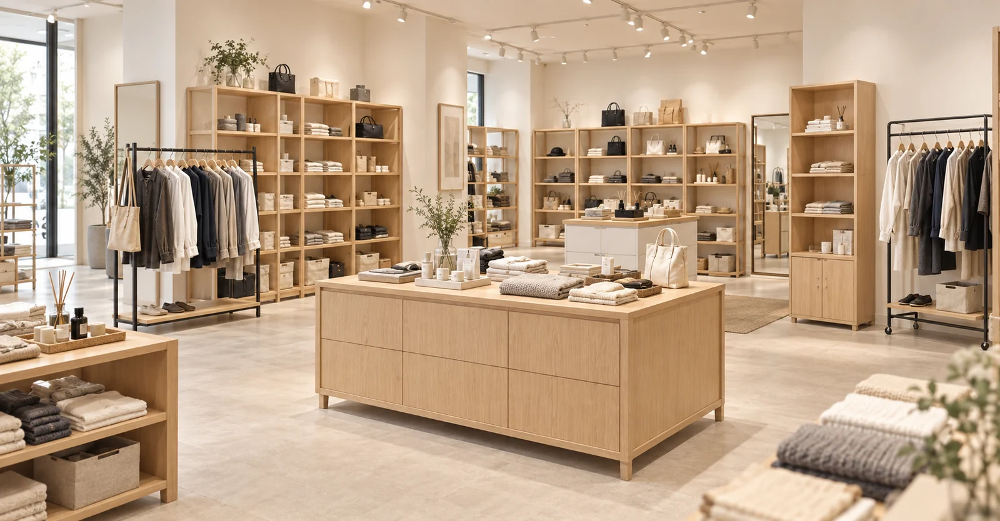
원목 시리즈자연스럽고 따뜻한 인상을 만드는 내추럴 오크 톤02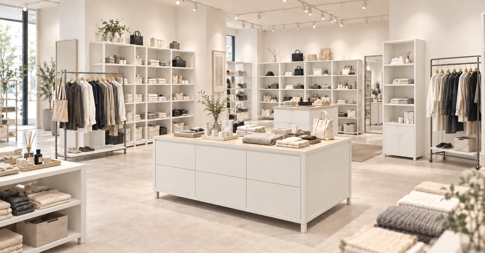
화이트 시리즈상품의 색을 또렷하게 보여주는 깨끗하고 모던한 톤
LAYOUT DEVELOPMENT
선택한 톤을 기준으로
매장 배치도를 구성합니다.
벽면 진열, 중앙 테이블, 행거의 위치를 도면에서 먼저 검토합니다. 입구에서 내부까지 시야가 이어지고 고객이 자연스럽게 순환하도록 집기 간격과 방향을 조정했습니다.
- 벽면 시스템으로 수직 진열량 확보
- 낮은 중앙 매대로 개방적인 시야 유지
- 시즌 변화에 대응하는 모듈형 제품 구성
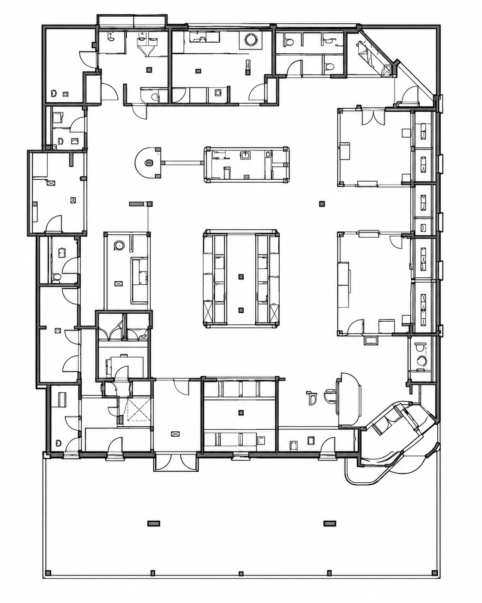
업로드한 원본 도면의 공간 구성과 중앙 집기 위치를 기준으로 정리한 평면도
현장 설치 시각화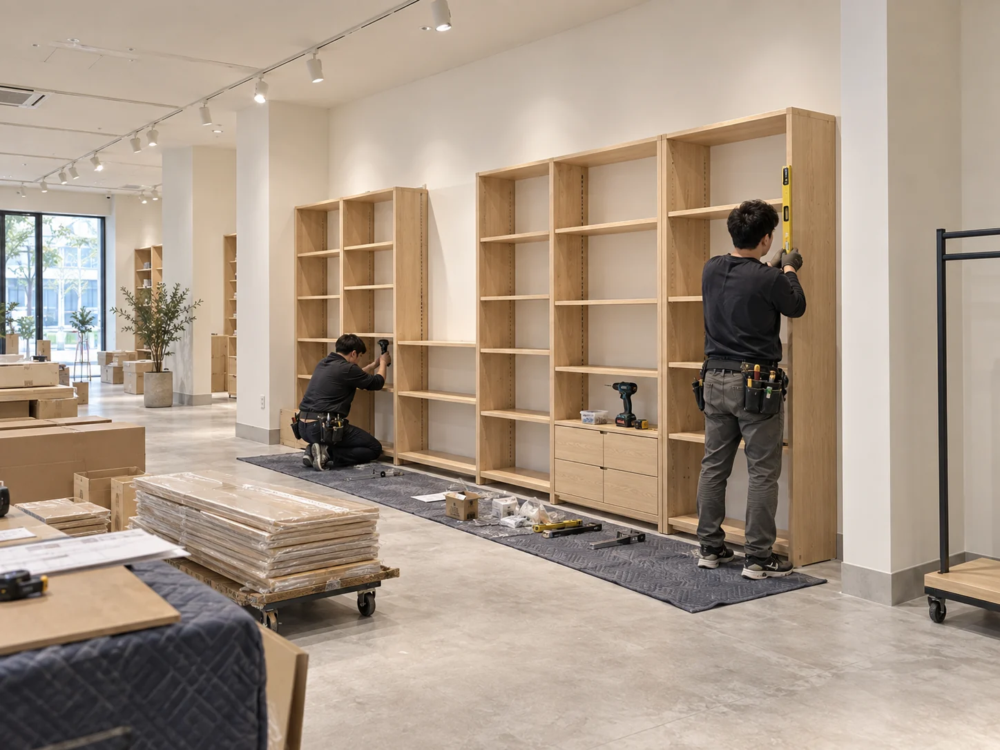
벽면 시스템 시공 선반의 수평과 모듈 간격을 확인하며 벽면 진열 시스템을 설치합니다.
현장 설치 시각화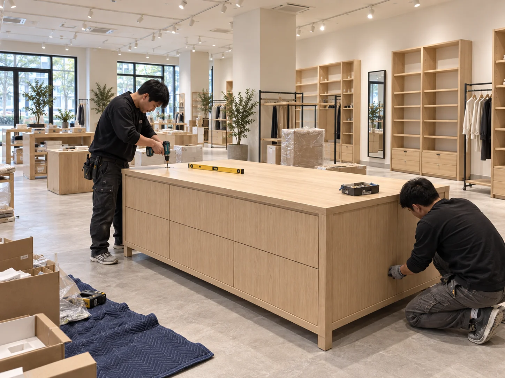
중앙 매대 설치 수납 본체와 상판을 체결하고 고객 동선에 맞춰 최종 위치를 조정합니다.
FINAL VISUALIZATION
배치와 톤을 반영한
최종 시각화 이미지
원목 시스템을 중심으로 벽면 진열과 낮은 중앙 매대를 구성한 최종안입니다. 고객 동선과 상품 밀도, 공간의 전체적인 온도를 한 장에서 확인합니다.
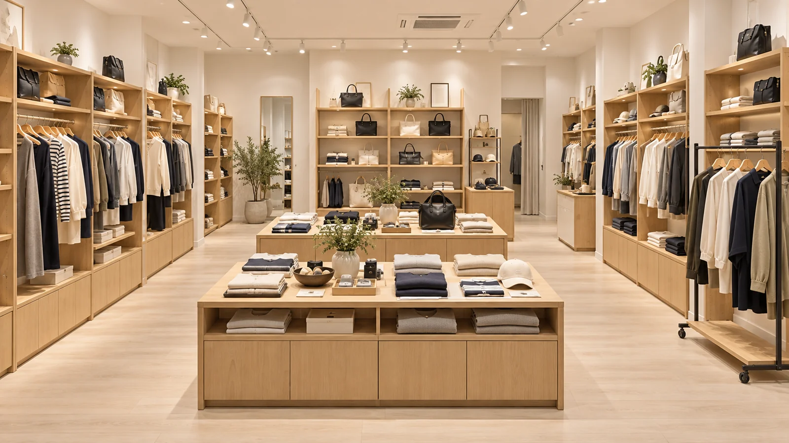
FINAL RETAIL VISION원목 진열 시스템과 열린 회유 동선을 반영한 최종 공간 제안
01벽면 시스템
의류와 가방, 소품의 높이에 맞춰 선반과 행거 위치를 유연하게 조절합니다.
02중앙 진열
동선을 방해하지 않는 낮은 테이블로 신상품과 주력 상품에 시선을 모읍니다.
03원목 톤 선택
편안하고 자연스러운 브랜드 인상을 위해 내추럴 오크 마감을 최종 선택했습니다.
START YOUR PROJECT
매장의 조건에 맞는 구성을 제안해 드립니다.
업종, 공간 크기, 보유 설비와 필요한 진열량을 알려주시면 상담부터 시작할 수 있습니다.